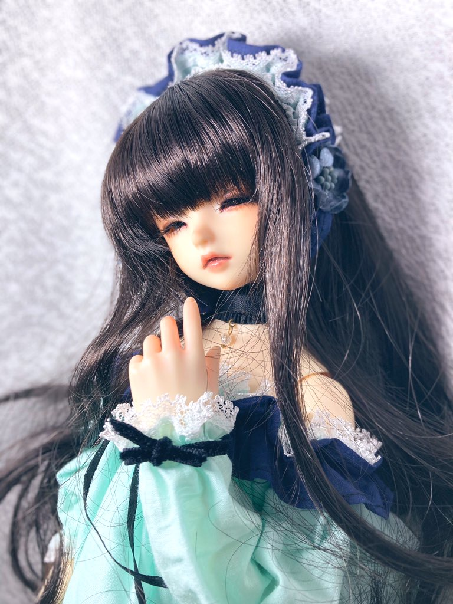

REAL
可愛らしい少女から大人の女性、活発な少年から青年まで、あなたのイメージ通りに 変身できる美しいドールです。
繊細なメイクが施されており、とても綺麗です。



ドールには様々な種類があります。
大きく分けて3つ紹介します。
可愛らしい少女から大人の女性、活発な少年から青年まで、あなたのイメージ通りに 変身できる美しいドールです。
繊細なメイクが施されており、とても綺麗です。
フィギュアとドールと双方の魅力を持ちます。
独自のキャラクター表現も大きな魅力の一つです。
可愛らしい雰囲気が大きな特徴で、カスタマイズがしやすい印象です。
箱を開けるまで中身が分からないブラインド形式で発売されている小さなドールです。
比較的安価で初心者におすすめです。箱を開けるまで中身が分からないドキドキ感も味わえます。
ドールを見たり、 お迎えしたりすることができます。
関東最大のスーパー
ドルフィー(SD)の専門店。
150-0001東京都渋谷区神宮前1-12-1

関東最大のドルフィー
ドリーム(DD)の専門店。
101-0021東京都千代田区外神田1-15-16
ラジオ会館8F

カスタマイズや撮影など、自分だけの楽しみ方が待っています。

お顔や瞳の色、ボディのサイズ、服や髪などカスタマイズは自由自在。 あなただけのドールに作り上げましょう。
自作した服やドールアイなどを販売する即売会も開かれています。
お気に入りの洋服やフォトスポットで撮影し、 思い出として写真に残す楽しみもあります。同じ顔をしているのに場所や日の当たり方、 撮る角度によって違う顔を見せてくれるのがドールの魅力です。